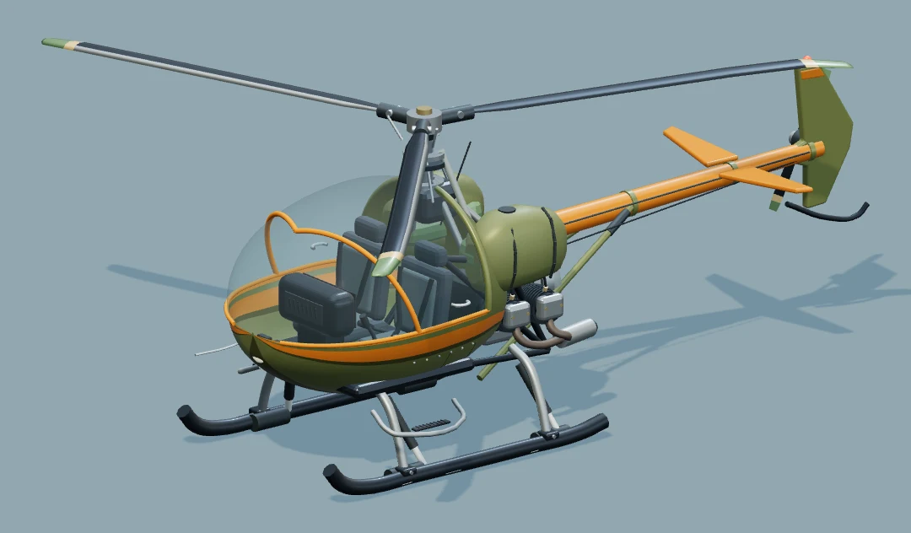

FLIGHT OPERATIONS
해온 항공구조대
도시 규모와 출동 기체를 선택하세요.
기체 식별01 / 20

AIRFRAME
HAEON 301해온 솔새
PILOT ACCOUNT—해온 솔새 · 물양동이 · 확성기로 시작합니다.
휴대폰을 가로로 돌리면 기체 양옆이 더 넓게 보입니다. 왼쪽 스틱으로 이동·선회하고 오른쪽 버튼으로 상승·하강합니다.
도시 규모와 출동 기체를 선택하세요.

휴대폰을 가로로 돌리면 기체 양옆이 더 넓게 보입니다. 왼쪽 스틱으로 이동·선회하고 오른쪽 버튼으로 상승·하강합니다.
스틱을 놓으면 감속하고, 상승·하강 버튼을 놓으면 고도를 유지합니다.